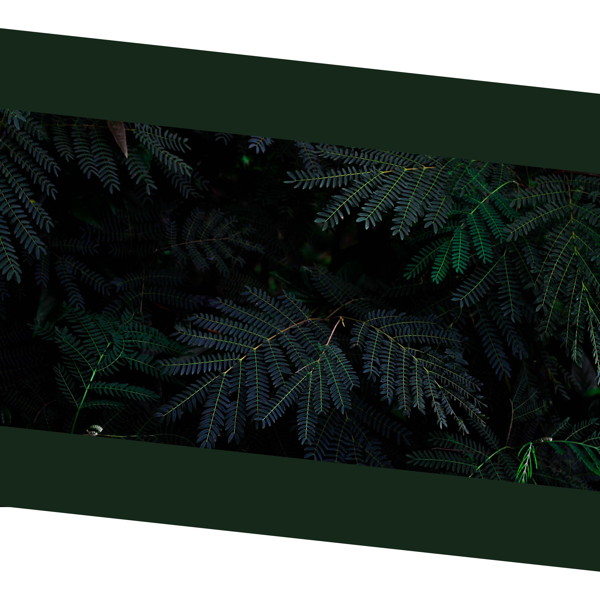

Hello 👋! I'm Kenno, I'm especially interested in cybersecurity but with all the years I've also picked up programming, computer hardware, system administration, web development and more... This is also the reason why I use the line "Lost in the world of IT" a lot, because there's always something new to learn in this field.
First ever completed website that was written from scratch using HTML, CSS and JavaScript. It features burger menu on smaller screens, custom scrollbar, gradient background, jumping to sections and on hover actions.
View source in Github
After struggling with responsiveness on my first project I decided to do some further research and create a new portfolio page with brand new design, more features and most importantly old bug fixes.
🚧 This part is still under construction, you can still reach me via Twitter.